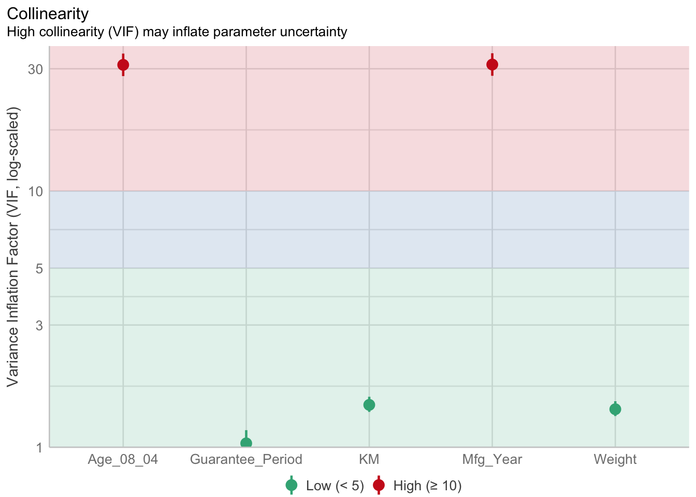
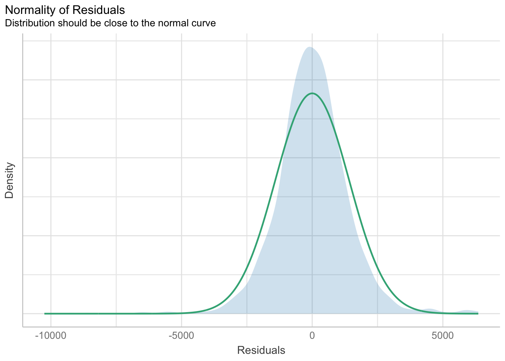
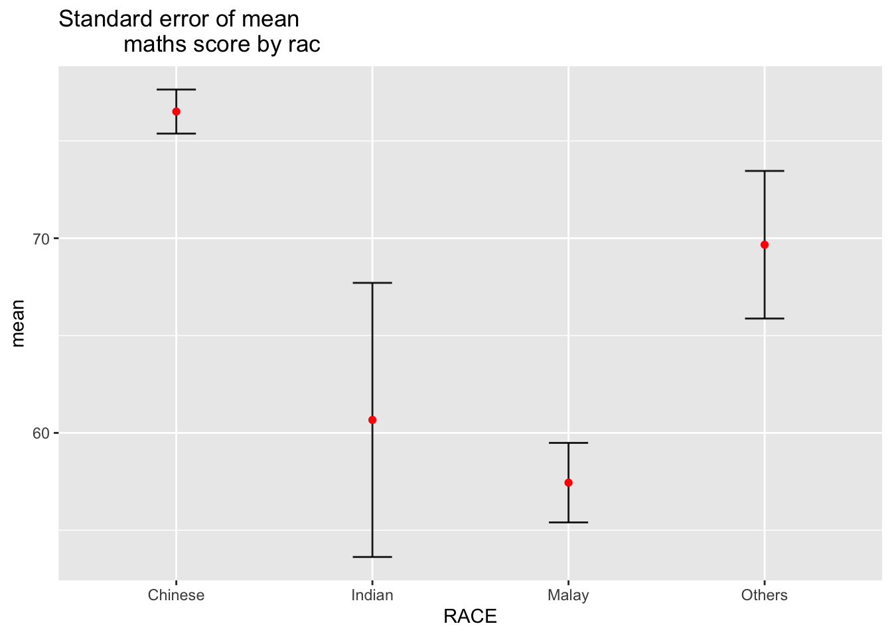
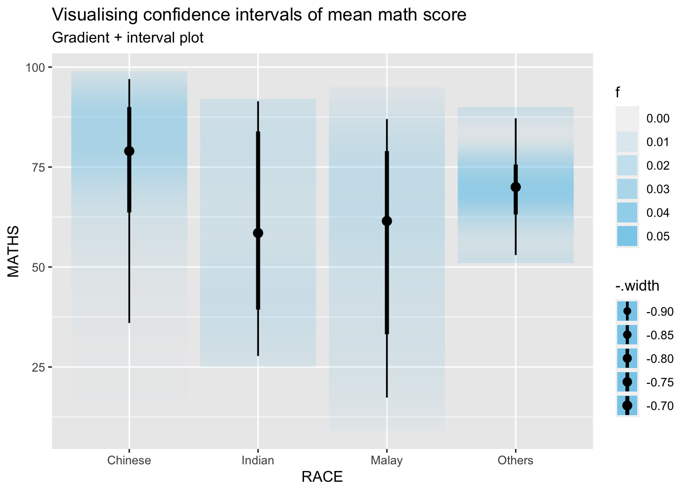

pacman::p_load(tidyverse,patchwork,plotly,DT)inclass-ex-04
data <- read_csv('data/Exam_data.csv')plot_ly(data = data,
x = ~ENGLISH,
y = ~MATHS,
color = ~RACE) #<<p <- ggplot(data = data,
aes(x = MATHS,
y= ENGLISH))+
geom_point(dotsize = 1)+
coord_cartesian(xlim = c(0,100),
ylim = c(0,100))
ggplotlyfunction (p = ggplot2::last_plot(), width = NULL, height = NULL,
tooltip = "all", dynamicTicks = FALSE, layerData = 1, originalData = TRUE,
source = "A", ...)
{
UseMethod("ggplotly", p)
}
<bytecode: 0x123768950>
<environment: namespace:plotly>pacman::p_load(readxl, performance,parameter,see)Importing Excel file: readxl methods
car_release <- read_xls("data/ToyotaCorolla.xls",
"data")
car_release# A tibble: 1,436 × 38
Id Model Price Age_0…¹ Mfg_M…² Mfg_Y…³ KM Quart…⁴ Weight Guara…⁵
<dbl> <chr> <dbl> <dbl> <dbl> <dbl> <dbl> <dbl> <dbl> <dbl>
1 81 TOYOTA Cor… 18950 25 8 2002 20019 100 1180 3
2 1 TOYOTA Cor… 13500 23 10 2002 46986 210 1165 3
3 2 TOYOTA Cor… 13750 23 10 2002 72937 210 1165 3
4 3 TOYOTA Co… 13950 24 9 2002 41711 210 1165 3
5 4 TOYOTA Cor… 14950 26 7 2002 48000 210 1165 3
6 5 TOYOTA Cor… 13750 30 3 2002 38500 210 1170 3
7 6 TOYOTA Cor… 12950 32 1 2002 61000 210 1170 3
8 7 TOYOTA Co… 16900 27 6 2002 94612 210 1245 3
9 8 TOYOTA Cor… 18600 30 3 2002 75889 210 1245 3
10 44 TOYOTA Cor… 16950 27 6 2002 110404 234 1255 3
# … with 1,426 more rows, 28 more variables: HP_Bin <chr>, CC_bin <chr>,
# Doors <dbl>, Gears <dbl>, Cylinders <dbl>, Fuel_Type <chr>, Color <chr>,
# Met_Color <dbl>, Automatic <dbl>, Mfr_Guarantee <dbl>,
# BOVAG_Guarantee <dbl>, ABS <dbl>, Airbag_1 <dbl>, Airbag_2 <dbl>,
# Airco <dbl>, Automatic_airco <dbl>, Boardcomputer <dbl>, CD_Player <dbl>,
# Central_Lock <dbl>, Powered_Windows <dbl>, Power_Steering <dbl>,
# Radio <dbl>, Mistlamps <dbl>, Sport_Model <dbl>, Backseat_Divider <dbl>, …model <- lm(Price ~ Age_08_04 + Mfg_Year + KM +
Weight + Guarantee_Period, data = car_release)
model
Call:
lm(formula = Price ~ Age_08_04 + Mfg_Year + KM + Weight + Guarantee_Period,
data = car_release)
Coefficients:
(Intercept) Age_08_04 Mfg_Year KM
-2.637e+06 -1.409e+01 1.315e+03 -2.323e-02
Weight Guarantee_Period
1.903e+01 2.770e+01 Model Diagnostic: checking for multicolinearity:
check_c <- check_collinearity(model)
plot(check_c)
Model Diagnostic: checking normality assumption
model1 <- lm(Price ~ Age_08_04 + KM +
Weight + Guarantee_Period, data = car_release)check_n <- check_normality(model1)plot(check_n)
Visualizing the uncertainty of point estimates
pacman::p_load(tidyverse, plotly, crosstalk, DT, ggdist, gganimate)exam <- read_csv("data/Exam_data.csv")Visualizing the uncertainty of point estimates: ggplot2 methods
pacman::p_load(tidyverse, plotly, crosstalk, DT, ggdist, gganimate)exam <- read_csv("data/Exam_data.csv")my_sum <- exam %>%
group_by(RACE) %>%
summarise(
n=n(),
mean=mean(MATHS),
sd=sd(MATHS)
) %>%
mutate(se=sd/sqrt(n-1))knitr::kable(head(my_sum),format = 'html')| RACE | n | mean | sd | se |
|---|---|---|---|---|
| Chinese | 193 | 76.50777 | 15.69040 | 1.132357 |
| Indian | 12 | 60.66667 | 23.35237 | 7.041005 |
| Malay | 108 | 57.44444 | 21.13478 | 2.043177 |
| Others | 9 | 69.66667 | 10.72381 | 3.791438 |
ggplot(my_sum) +
geom_errorbar(
aes(x=RACE,
ymin=mean-se,
ymax=mean+se),
width=0.2,
colour="black",
alpha=0.9,
size=0.5) +
geom_point(aes
(x=RACE,
y=mean),
stat="identity",
color="red",
size = 1.5,
alpha=1) +
ggtitle("Standard error of mean
maths score by rac")
exam %>%
ggplot(aes(x = RACE,
y = MATHS)) +
stat_pointinterval() + #<<
labs(
title = "Visualising confidence intervals of mean math score",
subtitle = "Mean Point + Multiple-interval plot")
exam %>%
ggplot(aes(x = RACE, y = MATHS)) +
stat_pointinterval(.width = 0.95,
.point = median,
.interval = qi) +
labs(
title = "Visualising confidence intervals of mean math score",
subtitle = "Mean Point + Multiple-interval plot")
exam %>%
ggplot(aes(x = RACE,
y = MATHS)) +
stat_gradientinterval(
fill = "skyblue",
show.legend = TRUE
) +
labs(
title = "Visualising confidence intervals of mean math score",
subtitle = "Gradient + interval plot")
devtools::install_github("wilkelab/ungeviz")library(ungeviz)ggplot(data = exam,
(aes(x = factor(RACE), y = MATHS))) +
geom_point(position = position_jitter(
height = 0.3, width = 0.05),
size = 0.4, color = "#0072B2", alpha = 1/2) +
geom_hpline(data = sampler(25, group = RACE), height = 0.6, color = "#D55E00") +
theme_bw() +
# `.draw` is a generated column indicating the sample draw
transition_states(.draw, 1, 3)NULL
No matching items